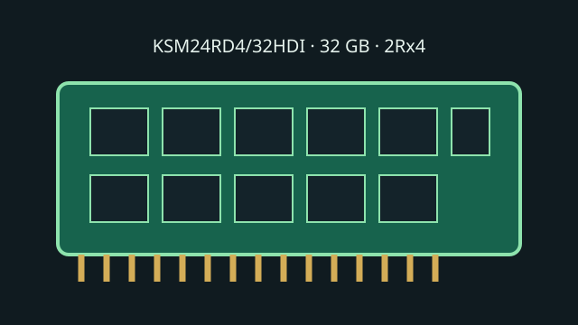

[ KINGSTON SERVER PREMIER // MODEL RECORD ]
KSM24RD4/32HDI
A 32 GB DDR4 server memory module with ECC and a registered command/address buffer. It is a model-specific RDIMM, not interchangeable with unbuffered DIMMs or load-reduced DIMMs.

Model specifications
| Capacity / module | 32 GB; 288-pin DDR4 DIMM |
|---|---|
| Rank / chip organization | 2Rx4, dual-rank x4 DRAM organization; x72 module bus (64 data bits + 8 ECC bits). |
| Speed / JEDEC | DDR4-2400, 2400 MT/s (PC4-19200R); JEDEC CL17-17-17 at the rated profile. |
| Voltage | 1.2 V VDD/VDDQ nominal; DDR4 module standard. |
| ECC / buffering | System-level ECC Registered DIMM (RDIMM), with registered command/address signals. |
| Platform compatibility | DDR4 server/workstation platforms whose CPU, board, firmware and QVL explicitly support 288-pin ECC RDIMMs, this density/rank, and at least DDR4-2400. Intel Xeon Scalable 3rd Gen supports DDR4 up to 3200 MT/s; older platforms may run this module at a lower controller-supported JEDEC rate. Verify exact slot population and qualification before installation. |
Service and compatibility notes
- Do not mix with UDIMM or LRDIMM in the same memory channel unless the system manufacturer explicitly permits it.
- Check the host service guide and qualified-memory list for rank, density, DIMM count per channel, BIOS requirements and operating rate.
- Record the full label, revision/date code and SPD contents; chip population can vary by production revision.
Manufacturer & standards sources
- Kingston — KSM24RD4/32HDI product datasheetSKU-specific module configuration and electrical reference.
- Kingston — Server Premier memory product familyManufacturer product-family and server-memory context.
- Intel — Xeon Gold 6338 specificationsCPU memory type/rate context; not a board QVL for this exact module.
- JEDEC — JESD79-4 DDR4 SDRAM standard